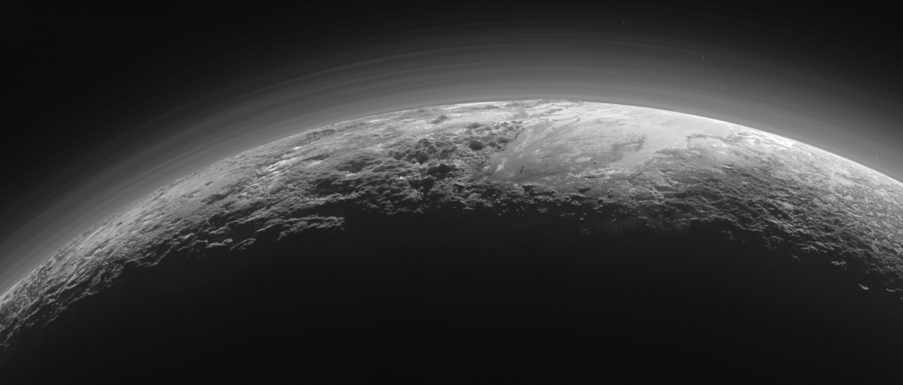

Deep Motion

During its 24th close flyby of Jupiter, NASA's Juno spacecraft captured
this view of a chaotic, stormy area of the planet's northern hemisphere
known as a folded filamentary region. Jupiter has no solid surface in
the same way Earth does. Data collected by Juno indicate that some of
the giant planet's winds run deeper and last longer than similar
atmospheric processes on Earth.
source
The Cygnus space freighter departs the International Space Station

iss061e150268 (Jan. 31, 2020) --- The Cygnus space freighter from
Northrop Grumman is pictured departing the vicinity of the International
Space Station after its release from the Canadarm2 robotic arm. Cygnus
had completed an 88-day stay attached to the Unity module after
delivering nearly 8,200 pounds of research and supplies to space station
on Nov. 4, 2019.
source
Pluto’s Majestic Mountains, Frozen Plains and Foggy Hazes

Just 15 minutes after its closest approach to Pluto on July 14, 2015,
NASA’s New Horizons spacecraft looked back toward the sun and captured
this near-sunset view of the rugged, icy mountains and flat ice plains
extending to Pluto’s horizon. The smooth expanse of the informally named
icy plain Sputnik Planum (right) is flanked to the west (left) by rugged
mountains up to 11,000 feet (3,500 meters) high, including the
informally named Norgay Montes in the foreground and Hillary Montes on
the skyline. To the right, east of Sputnik, rougher terrain is cut by
apparent glaciers. The backlighting highlights over a dozen layers of
haze in Pluto’s tenuous but distended atmosphere. The image was taken
from a distance of 11,000 miles (18,000 kilometers) to Pluto; the scene
is 780 miles (1,250 kilometers) wide.
source